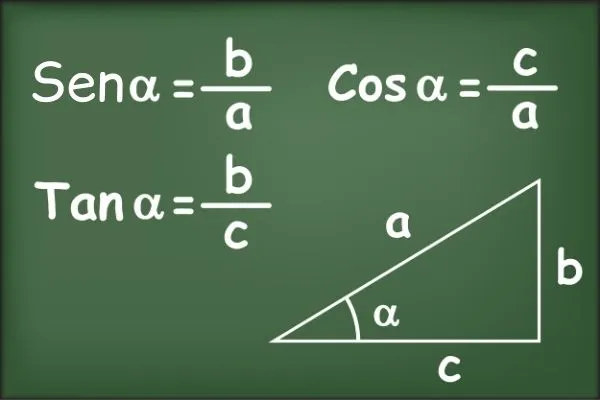
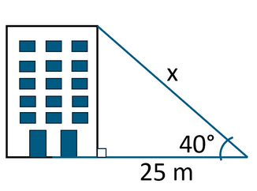
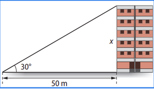
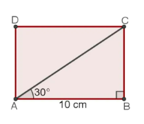

Define-se como sendo a razão entre o cateto adjacente a e a hipotenusa deste triângulo, também podemos definir
tangente como a razão (divisão, proporção) entre o cateto oposto e o cateto adjacente.

Um cabo de aço foi esticado do alto de um prédio até o chão, formando um ângulo de 40° com a horizontal.
Sabendo que foi fixado a 25 metros da base do prédio, qual o comprimento do cabo de aço?
(use cos 40° = 0,76).

Quando os raios do Sol formam o ângulo de 30° com o plano do chão, obtém-se a medida de 50 m para a sombra de um prédio.
Qual é a altura aproximada desse prédio? Dado: tg 30° ≅ 0,58.

Um retângulo ABCD, com 10 centímetros de comprimento, foi dividido em duas partes por sua diagonal AC, conforme mostra a imagem a seguir. Sabendo que o ângulo CÂB = 30°,
qual é o comprimento da diagonal do retângulo? (use cos 30° = √3/2).

Uma escada apoiada em uma parede de um prédio, num ponto que dista 8 m do solo, forma com essa parede um ângulo de 21°.
Qual a distância entre o prédio e o pé da escada?
(Use: sen 21º = 0,35; cos 21º = 0,9 e tg 21º = 0,38).